.--. .--. .--. .--.
.-( ). ( ). .-( ).( ).
(___.__)__)(__.__)__) (___.__)__) (____) 2025.02.18 - 03.05 챔버 CHMBR, 서울 성북구
“공동주택(共同住宅) 주민으로 살아남기” 주민제안배밭골 곡괭이 - 박희수 이지원 |
||
|---|---|---|
|
1. 서문 |
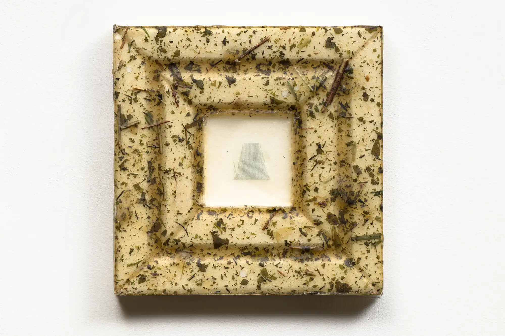
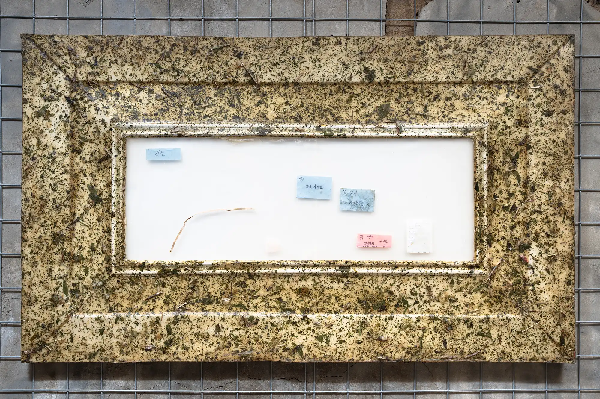
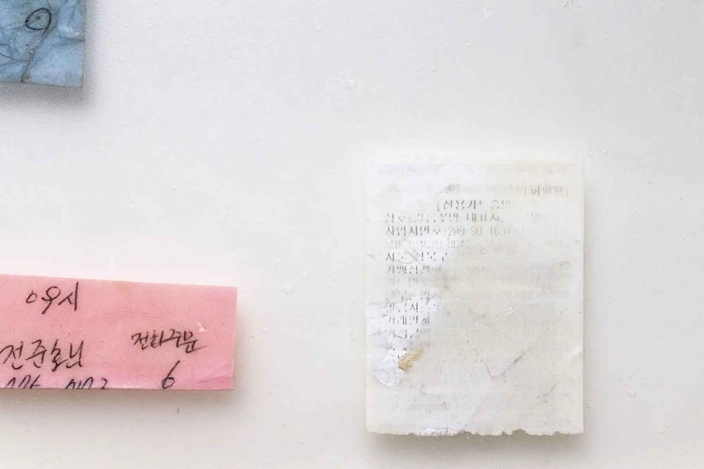
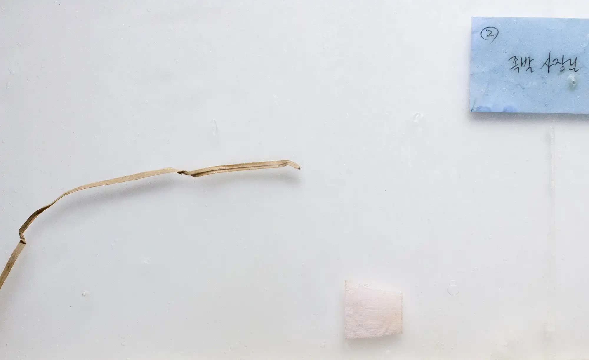
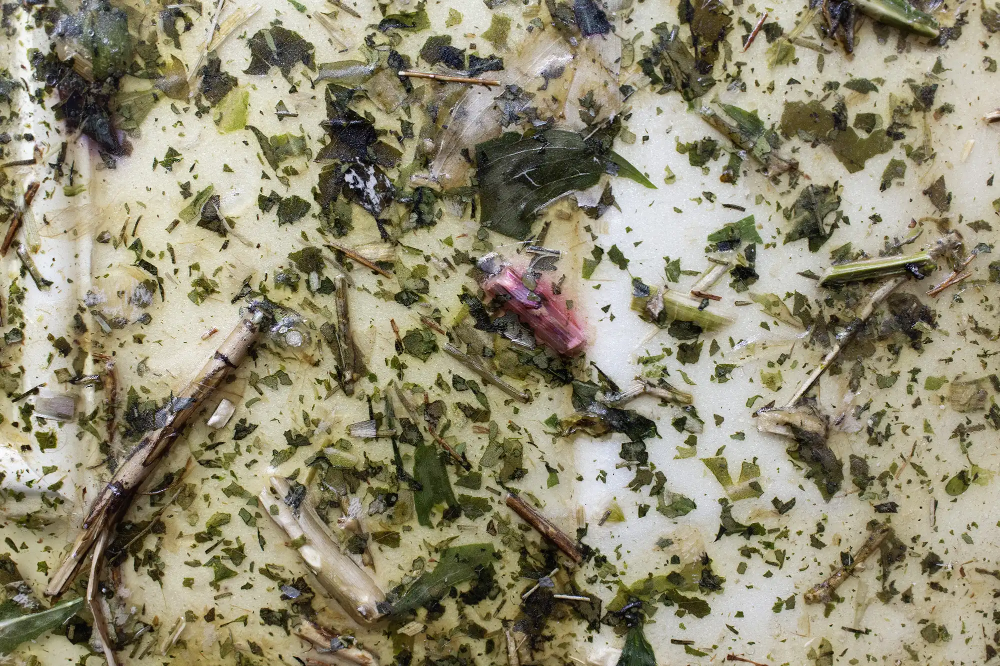
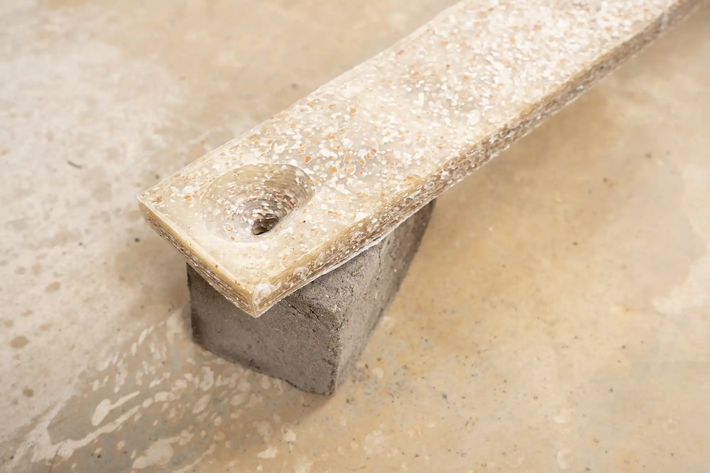
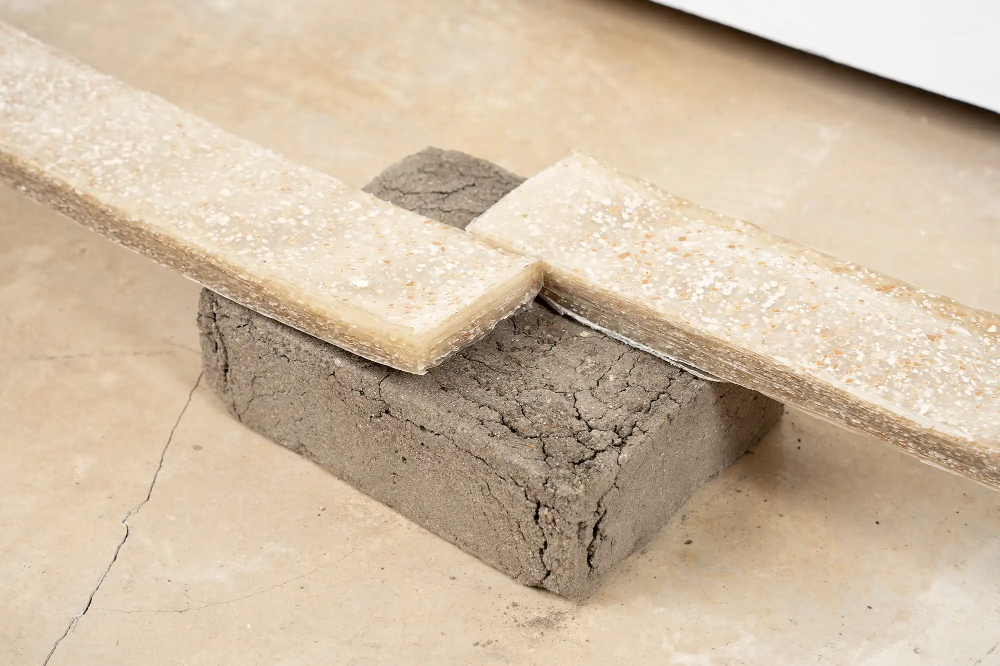
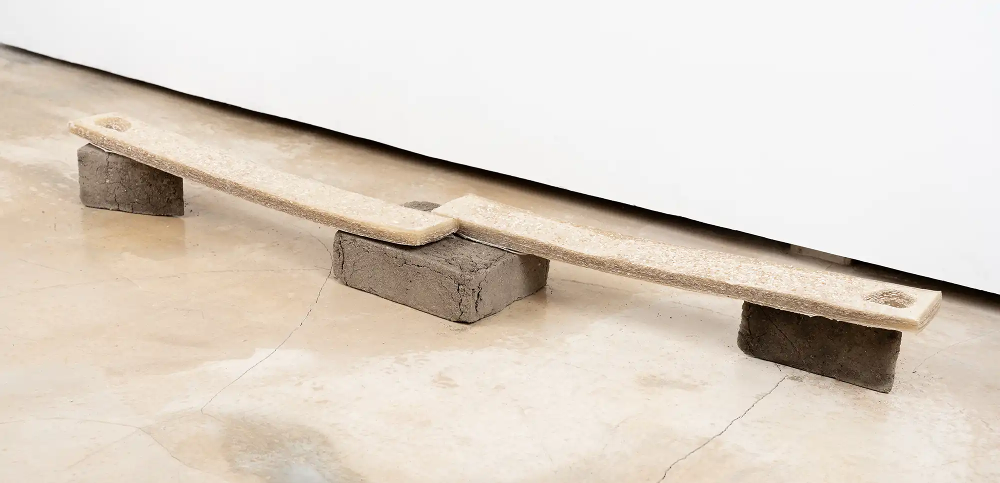
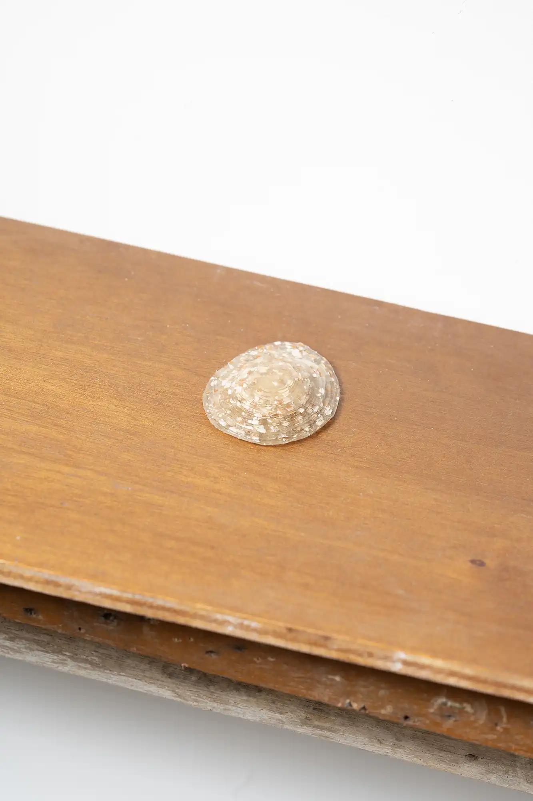
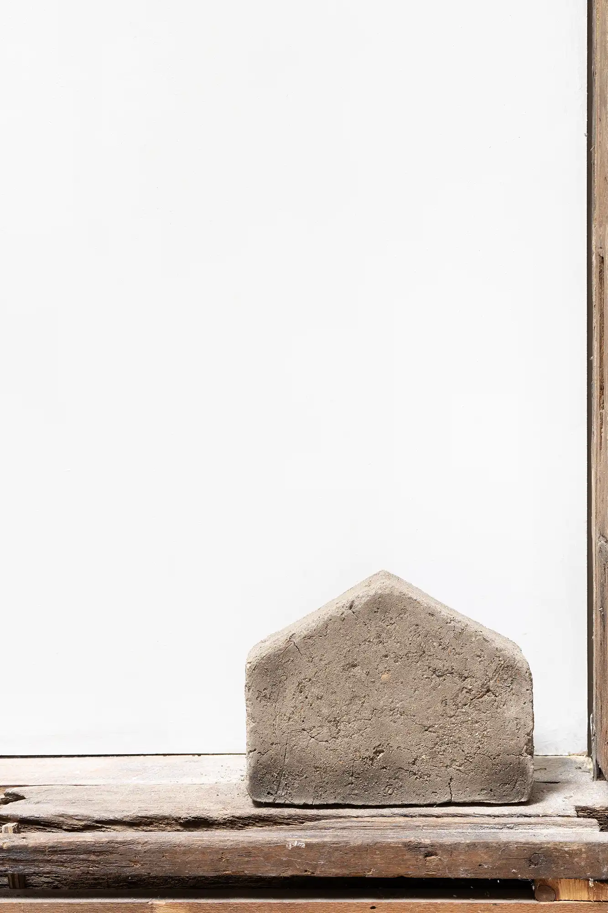
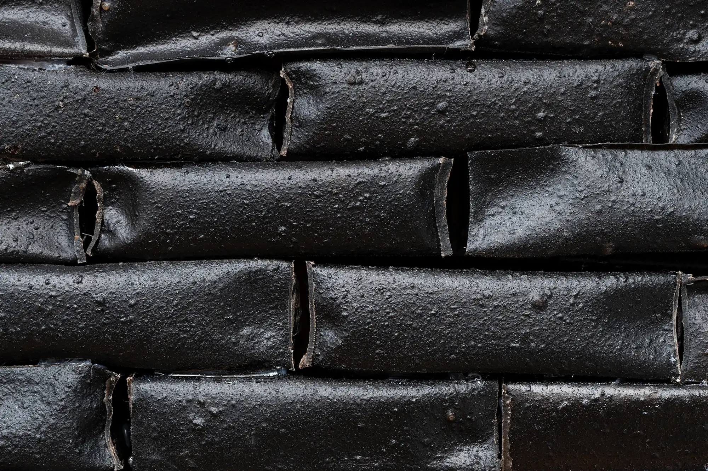
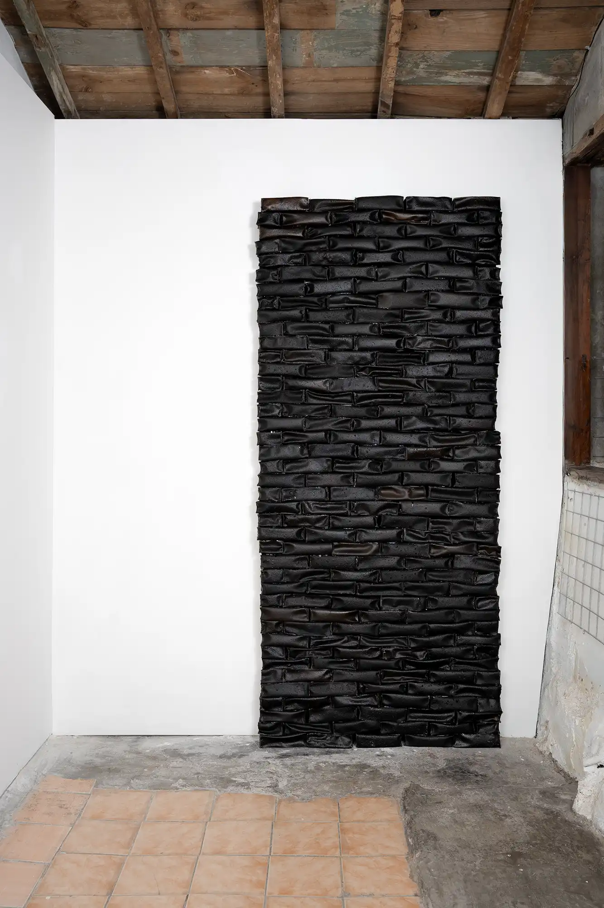
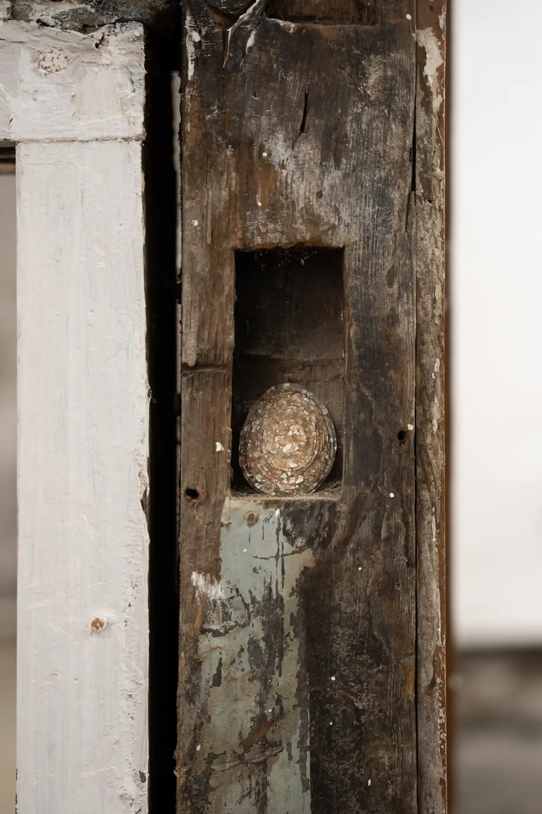
|
(b1999) 이지원은 모르는 사람들과의 만남과 작용을 통해 작업의 계기를 찾는다. 공간에서 자신의 위치와
환경에 집중하며 얻는 감각을 입체 구조물로 치환한다. 이번 작업에서는 주거지 주변의 가게들을
드나들며 느낀 경계의 출입에 대해 다루고자 한다. 작가는 가게에서 발생하는 폐기물을 받아 작업의
주재료로 사용하여 경계의 두께를 시각화한다.
|
====
!!!!
==========================
%%%%%%%%%%%%%%%%%%%%%%%%%%%%%%
%%%%%%%%%%%%%%%%%%%%%%%%%%%%%%%%%%
%%%%%%%%%%%%%%%%%%%%%%%%%%%%%%%%%%%%%%
|| _____ _____ ||
|| | | | | | | ||
|| |-|-| |-|-| ||
|| ##### ##### ||
|| _____ ____ _____ ||
|| | | | @@@@ | | | ||
|| |-|-| @@@@ |-|-| ||
|| ##### @@*@ ##### ||
|| @@@@ ||
******************____****************
**************************************
|
||
후원 성북문화재단 |
||